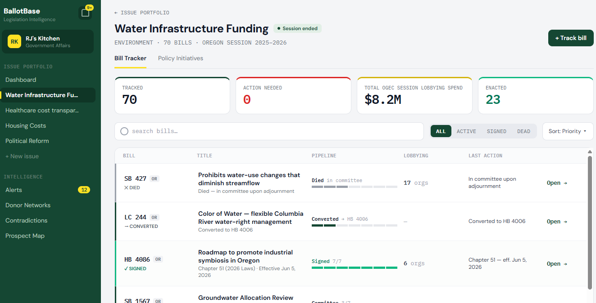
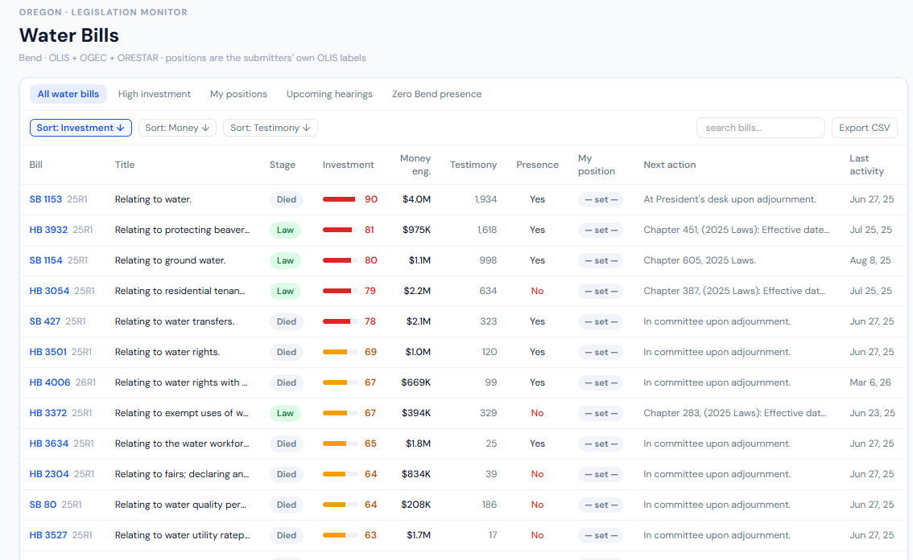

BallotBase tracks Oregon's whole political record in one place: every bill and vote, who lobbied and who funded the people voting, the testimony and positions on the record, and the Legislative Concept drafts that surface on committee agendas weeks before a bill is ever filed.

Oregon is our deepest state. Money, lobbying, and the full legislative record, joined together and sourced straight from the state's own systems.

Sourced directly from Oregon's own systems, no third-party aggregator.
Pick an issue, and get the bills, the lobbying, the money, and the drafts that have not become bills yet, in one view.
No credit card required. We'll reach out personally within 24 hours.